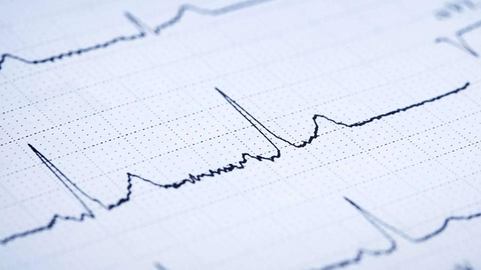

Students: Glazunov M., Jansen J., Lehnen J., Marsella A., Schönwald N., Yeritsyan A.;
Supervisors: Karel J., Bonizzi P.;
Semester: 2018-2019;

Fig 1. - An example ECG recording
Problem statement and motivation:
There are several diseases and disorders which can be detected by monitoring ECG recordings. Usually these diagnoses require a long process,
several tools and expertise and are therefore very time consuming and expensive. In the case of Sleep Apnea for instance researchers have
developed detection techniques using less information, such as from single-lead ECG recordings. From these recordings, often time,
time-frequency and frequency features are computed and subsequently used for machine learning algorithms. Examples are Support Vector
Machines (SVM) (Khandoker et al., 2009), Recurrent Neural Networks (RNN) (Cheng et al., 2017) and Hidden Markov Models and Deep
Learning (Li et al., 2018).
While the accuracy is steadily improving over the years, it would be of much more use if it were possible to develop a technique that
could be applied to other medical problems that be detected by changes in the ECG over time. Only one example is ischemia where the
current diagnosis is based on a potentially harmful treadmill test which would not be necessary any more.
We want to compare different representations of the data to find out which are suited better than others for classification and which
features are the most important for those. Another aim is to find out whether Transfer Learning from a Convolutional Neural Network (CNN)
can be used for this task and if furthermore combining CNNs with RNNs can improve the accuracy taking into account timing (see fig. 2).
However in our research we want to focus on the case of Sleep Apnea to be able to compare the results to previous research.
Sleep Apnea is a common organic sleep disorder which is estimated to affect about 100 million people world-wide (Franklin et al., 2015).
It creates frequent pauses of breathing during sleep which causes the brain to wake up every time to start breathing again and
therefore leads to improper sleep. People suffering from this disease can experience drowsiness during the day or even more serious health
risks such as cardiovascular or cerebrovascular diseases, as it is a cause of medical morbidity and mortality.
Fig 2. - ECG chunks classification with a Recurrent Convolutional Network (inspired by Donahue, J. et al., 2014)
Research questions:
Can CNNs classify one minute signals to apnea vs non-apnea events?
Can transfer learning be used based on the CNNs pre-trained on ImageNet (Deng et al., 2009) instead of training a whole CNN from scratch?
Can combining CNNs with RNNs improve accuracy taking into account timing?
What signal representation is better suited for the classification?
Signal in time or time-frequency domain?
What are the most relevant features for such classification in different representations?
Main outcomes:
to be found out.
References:
Franklin, K. A., & Lindberg, E. (2015). Obstructive sleep apnea is a common disorder in the population—a review on the epidemiology of sleep apnea. Journal of Thoracic Disease, 7(8), 1311-1322
Cheng, M., Sori, W.J., Jiang, F., Khan, A., Liu, S. (2017). Recurrent Neural Network Based Classification of ECG Signal Features for Obstruction of Sleep Apnea Detection. 2017 IEEE International Conference on Computational Science and Engineering (CSE) and IEEE International Conference on Embedded and Ubiquitous Computing (EUC)
Li, K., PanWeifeng, Li, Y., Jiang Q., Liu, G. (2018). A method to detect sleep apnea based on deep neural network and hidden Markov model using single-lead ECG signal. Neurocomputing, 294, 94-101
Khandoker, A.H., Palaniswami, M. (2009). Automated recognition of patients with obstructive sleep apnoea using wavelet-based features of electrocardiogram recordings. Computers in Biology and Medicine, 39(1), 88-96
Deng, J., Dong, W., Socher, R., Li, L.-J., Li, K. & Li, F.-F. (2009). ImageNet: A large-scale hierarchical image database. CVPR, 248-255
Donahue, J., Hendricks, L.A., Guadarrama, S., Rohrbach, M., Venugopalan, S., Saenko, K., Darrell, T. (2014). Long-term Recurrent Convolutional Networks for Visual Recognition and Description